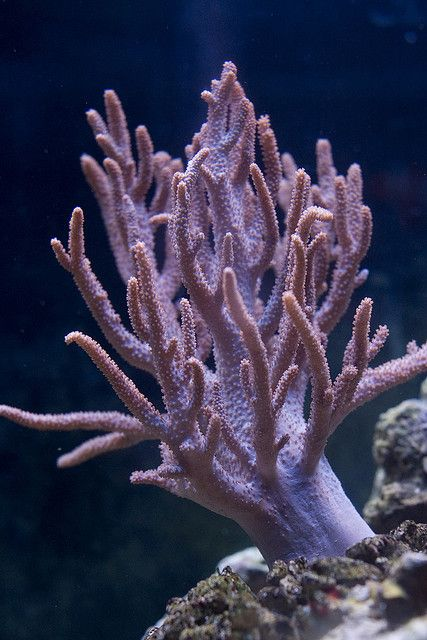
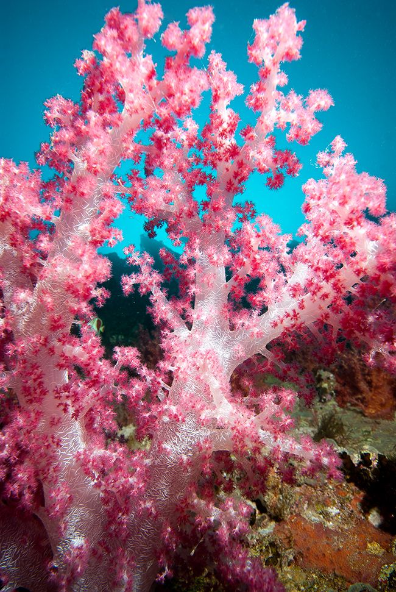
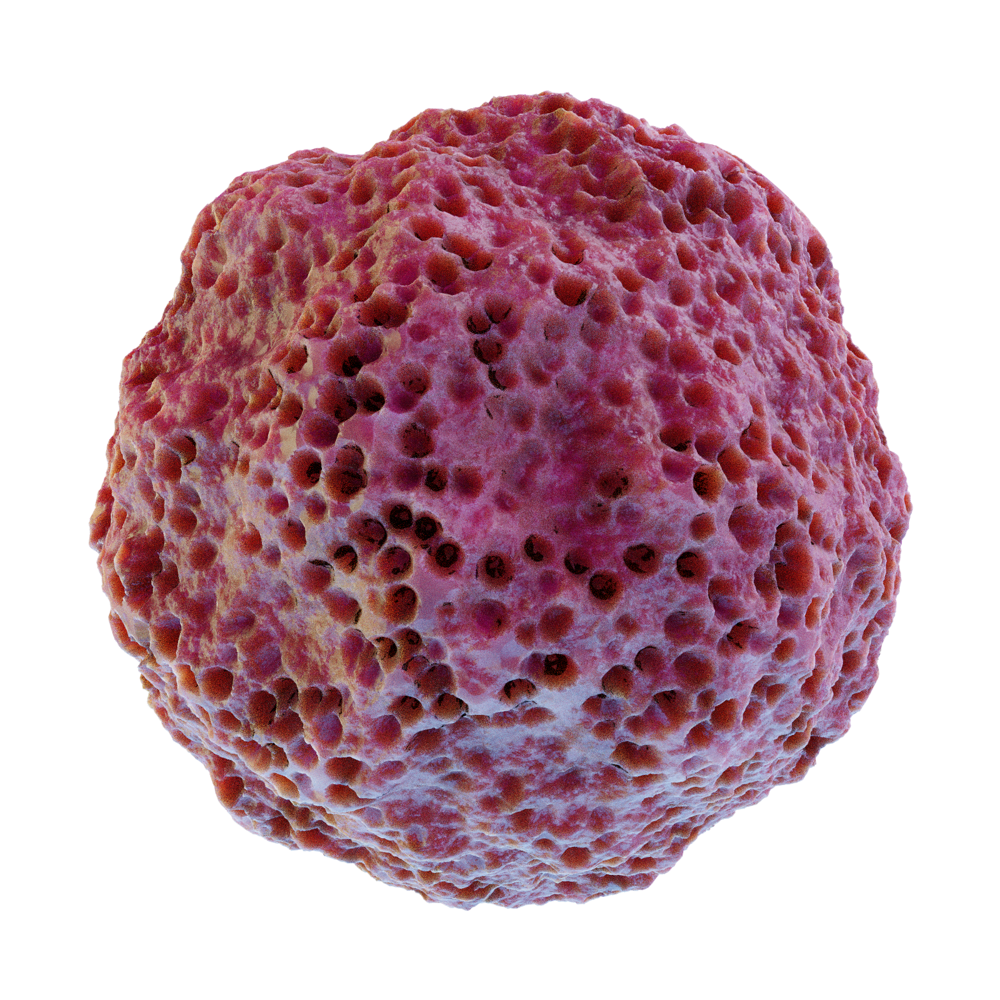
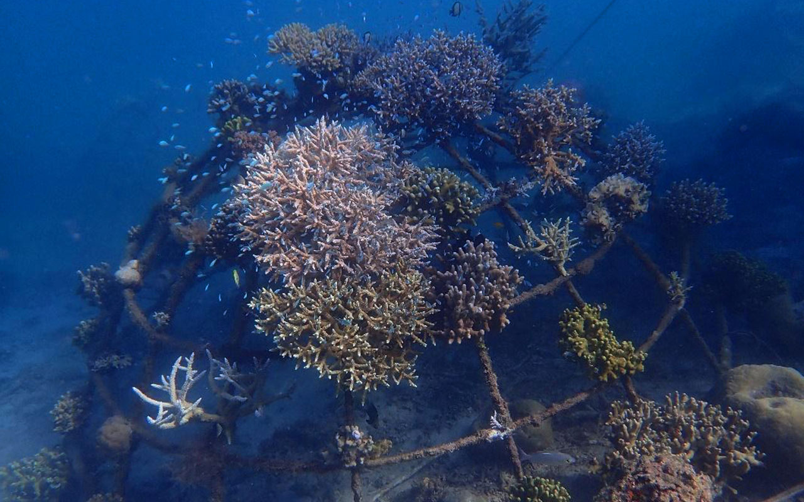
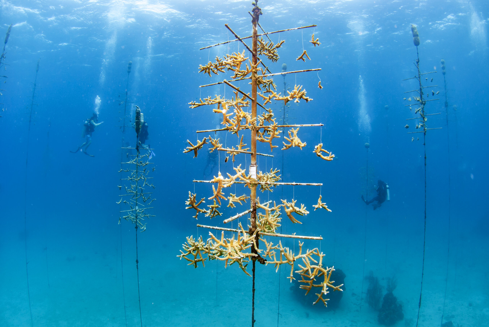
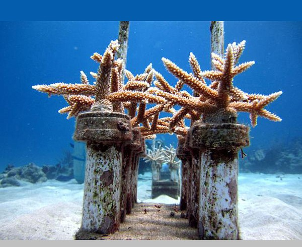
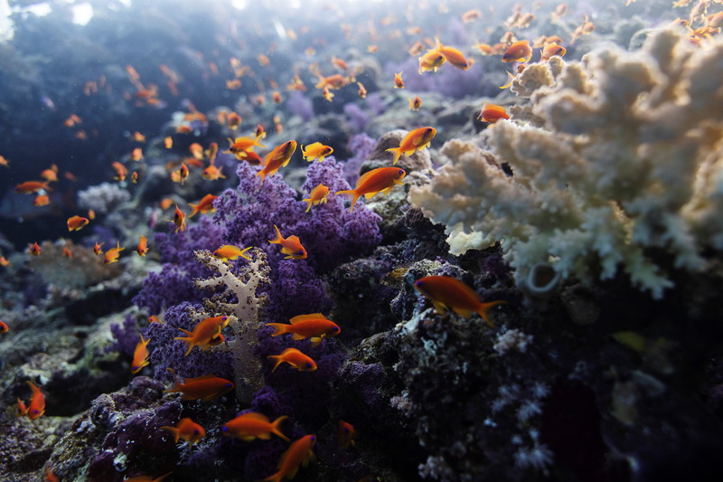

Science-first
We publish methods and results in accessible formats so anyone can track impact and learn from our work.
We restore coral reefs by combining nursery propagation, climate-smart outplanting, and community partnerships.
Coral reefs occupy less than 1% of the ocean floor yet support about 25% of marine life. They buffer storms, sustain fisheries, and anchor local economies through nature-based tourism.
Heat stress and pollution are pushing many systems past thresholds. Restoration buys time: it stabilizes structure, preserves genetics, and keeps ecosystems functional while climate action scales.


All activities follow local permits and are co-designed with neighboring communities to ensure long-term stewardship.
We publish methods and results in accessible formats so anyone can track impact and learn from our work.
Local partners guide site selection and care for nurseries, ensuring benefits stay rooted where reefs grow.
We prioritize heat-tolerant genotypes and shaded microhabitats to improve survival through marine heatwaves.
Restoration is more than planting. We stabilize rubble, design microhabitats, and stagger outplants through seasons to improve survival. Each site receives a bespoke plan based on currents, light, and heat history.





“Every fragment we plant is a promise to the future reef. The work is patient, the results beautiful.”
— Field lead, Coral Resurrection